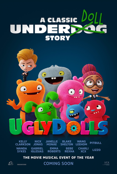
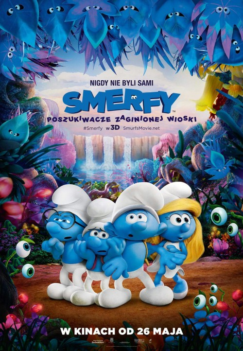

Kelly Asbury amerykański reżyser, urodzony w 1960, znany z Shrek 2, Gnomeo i Julia, Mustang z Dzikiej Doliny.
| Filmografia | ||
|---|---|---|
| 2019 |  | Animacja / Komedia / Przygodowy |
| Paskudy. UglyDolls | ||
| (UglyDolls) | ||
| 2017 | ||
|  | ||
| Animacja / Familijny / Fantasy | ||
| Smerfy: Poszukiwacze zaginionej wioski | ||
| (Smurfs: The Lost Village) | ||
| 2011 | |
Animacja / Familijny / Fantasy / Komedia rom. |
| Gnomeo i Julia | ||
| (Gnomeo and Juliet) | ||
| 2004 | |
|
| Animacja / Familijny / Komedia | Shrek 2 |